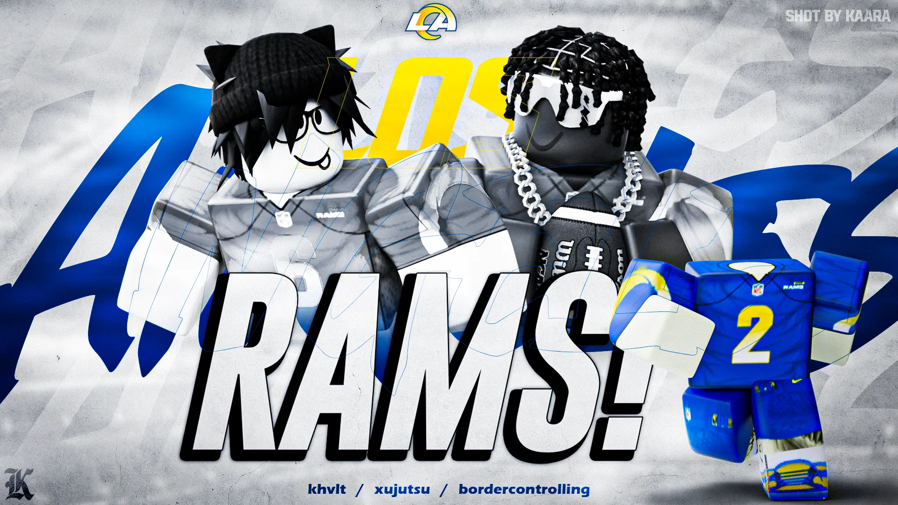
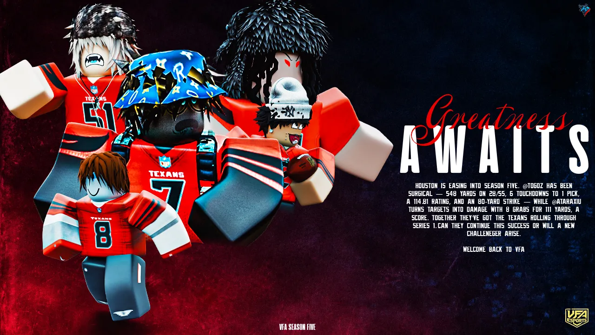
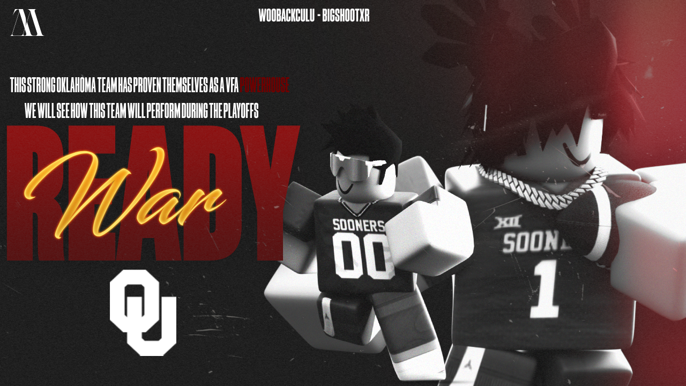

LEAGUE GFX
VFA League Graphics
Featured visual work connected to VFA's football culture and league media.
One home for competition, teams, statistics, media, league history, verification and the official VFA rulebook.
 32 TEAMS
Series 2 • The Reckoning
32 TEAMS
Series 2 • The Reckoning
Each panel takes you directly to a different part of the league.
Featured league artwork and visual history from VFA.

Featured visual work connected to VFA's football culture and league media.

Archived VFA artwork highlighting the league's previous season and Houston story.

Featured playoff-style artwork for league media and historical presentation.
Search for a franchise such as Houston and the site can return its league placement, division, current record and point differential.
The History panel is designed to organize official VFA records over time: seasons, standings snapshots, game results, championship results, awards, player milestones, franchise changes, official announcements and archived league media.
History data should come from official VFA records and approved game reports rather than guesses or user-edited claims.
Open VFA History DiscordVFA Football exists to build a competitive Football Fusion league where players and franchises can enjoy organized competition, meaningful statistics, strong media coverage and a clear set of rules.
Our mission is to keep improving the league while making sure everyone has a fair, competitive and fun experience within VFA. That means creating clear standards, recognizing player and team achievements, protecting league integrity, improving communication and giving the community a place where competition and enjoyment can exist together.
VFA is built around continuous improvement: better administration, better game reporting, better statistics, better media and a better experience for the people who make the league possible.
The founders established VFA and helped shape its direction and mission.
VFA Founder
Helped establish the league's foundation and competitive vision.VFA Founder
Part of the founding leadership focused on building the VFA community.VFA Founder
Part of the founding leadership helping shape league culture and competition.VFA Founder
Part of the founding leadership committed to the league's long-term growth.People responsible for bringing VFA games and moments to the community.
VFA's Head Streamer, responsible for leading the league's streaming presence, helping coordinate featured broadcasts and presenting VFA games to the community.
VFA Streaming Staff supporting league broadcasts, game coverage and community viewing experiences.
VFA Streaming Staff supporting VFA broadcasts and helping bring league games to the community.
Official schedule space for regular games, primetime, playoffs and league scheduling information.
Featured Series 2 matchup.
Featured Series 2 matchup.
Featured Series 2 matchup.
Featured Series 2 matchup.
Each team has a 5-day deadline to play its 3 Series games. The goal is to keep the league moving efficiently, reduce scheduling delays and maximize the number of games completed within each series window.
Teams should communicate early and work with their opponents to complete all three games before the deadline.
This section is currently empty and will be filled out soon with VFA Primetime history, including featured games and notable Primetime records as the league builds its archive.
Future game JSON reports can feed completed results into the schedule automatically.
Current league table. Sort columns by clicking a header.
| Rank | Team | Division | W-L | PD |
|---|
Designed for automatic game-report updates from VFA JSON score reports.
| Player | Team | Pos | GP | Pass Yds | Pass TD | Rush Yds | Rush TD | Rec Yds | Rec TD | INT | Rating |
|---|
Every team and its three Series 2 opponents are listed below.
Plays: Minneapolis, Phoenix, San Francisco
Plays: Houston, Phoenix, San Francisco
Plays: Houston, Minneapolis, San Francisco
Plays: Houston, Minneapolis, Phoenix
Plays: Miami, Chicago, Baltimore
Plays: Washington, Chicago, Baltimore
Plays: Washington, Miami, Baltimore
Plays: Washington, Miami, Chicago
Plays: Charlotte, Baltimore, Seattle
Plays: NY Empire, Baltimore, Seattle
Plays: NY Empire, Charlotte, Seattle
Plays: NY Empire, Charlotte, Baltimore
Plays: Baton Rouge, Phoenix, Indianapolis
Plays: New York, Phoenix, Indianapolis
Plays: New York, Baton Rouge, Indianapolis
Plays: New York, Baton Rouge, Phoenix
Plays: Nashville, Oakland, Tampa Bay
Plays: Philadelphia, Oakland, Tampa Bay
Plays: Philadelphia, Nashville, Tampa Bay
Plays: Philadelphia, Nashville, Oakland
Plays: Los Angeles, Dallas, San Diego
Plays: Newark, Dallas, San Diego
Plays: Newark, Los Angeles, San Diego
Plays: Newark, Los Angeles, Dallas
Plays: Syracuse, New Orleans, Boston
Plays: Buffalo, New Orleans, Boston
Plays: Buffalo, Syracuse, Boston
Plays: Buffalo, Syracuse, New Orleans
Plays: Fayetteville, Denver, Madison
Plays: Atlanta, Denver, Madison
Plays: Atlanta, Fayetteville, Madison
Plays: Atlanta, Fayetteville, Denver
Featured Series 2 matchups.
Series 2 featured matchup.
Series 2 featured matchup.
Series 2 featured matchup.
Series 2 featured matchup.
All 32 VFA franchises.
Coverage, streams and league partners.
Start verification through the official VFA Discord.
The bot can associate your Discord identity with your VFA verification record without exposing private information publicly.
Verification supports anti-alt and anti-raid protections, with suspicious activity routed for staff review rather than automatic punishment from a single signal.
CFFL is the baseline rule framework. VFA-specific rules below override the baseline where stated.
VFA Football is a Football Fusion league. These rules establish the league's competition, conduct, scheduling, account-integrity and disciplinary standards. The CFFL framework is used as the baseline unless a VFA-specific rule below changes it.
Use this section for common rule questions. The answers below are based on the current VFA rules.
Search teams, rules, games and available player/stat records.